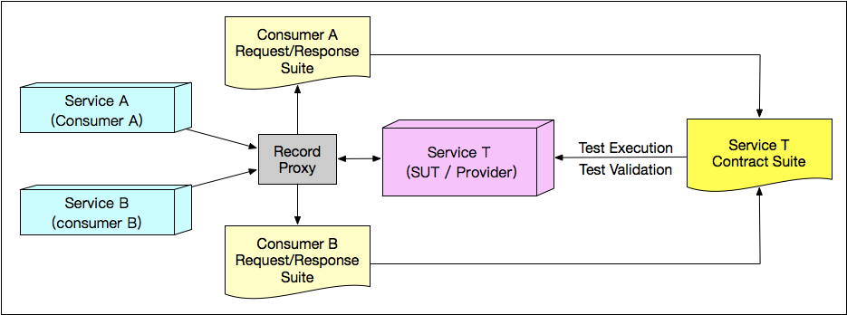

- 00 开篇词 从“小工”到“专家”，我的软件测试修炼之道.md.html
- 01 你真的懂测试吗？从“用户登录”测试谈起.md.html
- 02 如何设计一个“好的”测试用例？.md.html
- 03 什么是单元测试？如何做好单元测试？.md.html
- 04 为什么要做自动化测试？什么样的项目适合做自动化测试？.md.html
- 05 你知道软件开发各阶段都有哪些自动化测试技术吗？.md.html
- 06 你真的懂测试覆盖率吗？.md.html
- 07 如何高效填写软件缺陷报告？.md.html
- 08 以终为始，如何才能做好测试计划？.md.html
- 09 软件测试工程师的核心竞争力是什么？.md.html
- 10 软件测试工程师需要掌握的非测试知识有哪些？.md.html
- 11 互联网产品的测试策略应该如何设计？.md.html
- 12 从0到1：你的第一个GUI自动化测试.md.html
- 13 效率为王：脚本与数据的解耦 + Page Object模型.md.html
- 14 更接近业务的抽象：让自动化测试脚本更好地描述业务.md.html
- 15 过不了的坎：聊聊GUI自动化过程中的测试数据.md.html
- 16 脑洞大开：GUI测试还能这么玩（Page Code Gen + Data Gen + Headless）？.md.html
- 17 精益求精：聊聊提高GUI测试稳定性的关键技术.md.html
- 18 眼前一亮：带你玩转GUI自动化的测试报告.md.html
- 19 真实的战场：如何在大型项目中设计GUI自动化测试策略.md.html
- 20 与时俱进：浅谈移动应用测试方法与思路.md.html
- 21 移动测试神器：带你玩转Appium.md.html
- 22 从0到1：API测试怎么做？常用API测试工具简介.md.html
- 23 知其然知其所以然：聊聊API自动化测试框架的前世今生.md.html
- 24 紧跟时代步伐：微服务模式下API测试要怎么做？.md.html
- 25 不破不立：掌握代码级测试的基本理念与方法.md.html
- 26 深入浅出之静态测试方法.md.html
- 27 深入浅出之动态测试方法.md.html
- 28 带你一起解读不同视角的软件性能与性能指标.md.html
- 29 聊聊性能测试的基本方法与应用领域.md.html
- 30 工欲善其事必先利其器：后端性能测试工具原理与行业常用工具简介.md.html
- 31 工欲善其事必先利其器：前端性能测试工具原理与行业常用工具简介.md.html
- 32 无实例无真相：基于LoadRunner实现企业级服务器端性能测试的实践（上）.md.html
- 33 无实例无真相：基于LoadRunner实现企业级服务器端性能测试的实践（下）.md.html
- 34 站在巨人的肩膀：企业级实际性能测试案例与经验分享.md.html
- 35 如何准备测试数据？.md.html
- 36 浅谈测试数据的痛点.md.html
- 37 测试数据的“银弹”- 统一测试数据平台（上）.md.html
- 38 测试数据的“银弹”- 统一测试数据平台（下）.md.html
- 39 从小作坊到工厂：什么是Selenium Grid？如何搭建Selenium Grid？.md.html
- 40 从小工到专家：聊聊测试执行环境的架构设计（上）.md.html
- 41 从小工到专家：聊聊测试执行环境的架构设计（下）.md.html
- 42 实战：大型全球化电商的测试基础架构设计.md.html
- 43 发挥人的潜能：探索式测试.md.html
- 44 测试先行：测试驱动开发(TDD).md.html
- 45 打蛇打七寸：精准测试.md.html
- 46 安全第一：渗透测试.md.html
- 47 用机器设计测试用例：基于模型的测试.md.html
- 48 优秀的测试工程师为什么要懂大型网站的架构设计？.md.html
- 49 深入浅出网站高性能架构设计.md.html
- 50 深入浅出网站高可用架构设计.md.html
- 51 深入浅出网站伸缩性架构设计.md.html
- 52 深入浅出网站可扩展性架构设计.md.html
- 测试专栏特别放送 浅谈全链路压测.md.html
- 测试专栏特别放送 答疑解惑第一期.md.html
- 测试专栏特别放送 答疑解惑第七期.md.html
- 测试专栏特别放送 答疑解惑第三期.md.html
- 测试专栏特别放送 答疑解惑第二期.md.html
- 测试专栏特别放送 答疑解惑第五期.md.html
- 测试专栏特别放送 答疑解惑第六期.md.html
- 测试专栏特别放送 答疑解惑第四期.md.html
- 结束语 不是结束，而是开始.md.html
- 捐赠
24 紧跟时代步伐：微服务模式下API测试要怎么做？
你好，我是茹炳晟，今天我分享的主题是“紧跟时代步伐：微服务模式下API测试要怎么做？”。
通过一个的Restful API实例，我介绍了cURL和Postman工具的基本用法，这样我们对API测试有了一个感性认识；在此基础上，我介绍了API自动化测试框架发展的来龙去脉，借此我们对API测试框架的理解又更深入了一层。
今天，我将更进一步，带你去了解当下最热门的技术领域的API测试，即微服务模式下的API测试。微服务架构下，API测试的最大挑战来自于庞大的测试用例数量，以及微服务之间的相互耦合。所以，我今天分享这个主题的目的就是，帮你理解这两个问题的本质，以及如何基于消费者契约的方法来应对这两个难题。
而为了掌握微服务模式下的API测试，你需要先了解微服务架构（Microservice Architecture）的特点、测试挑战；而要了解微服务架构，你又需要先了解一些单体架构（Monolithic Architecture）的知识。所以，今天的话题我将逐层展开，目的就是希望你可以真正理解，并快速掌握微服务模式下的API测试。
单体架构（Monolithic Architecture）
单体架构是早期的架构模式，并且存在了很长时间。单体架构是将所有的业务场景的表示层、业务逻辑层和数据访问层放在同一个工程中，最终经过编译、打包，并部署在服务器上。
比如，经典的J2EE工程，它就是将表示层的JSP、业务逻辑层的Service、Controller和数据访问层的DAO（Data Access Objects），打包成war文件，然后部署在Tomcat、Jetty或者其他Servlet容器中运行。
显然单体架构具有发布简单、方便调试、架构复杂性低等优点，所以长期以来一直被大量使用，并广泛应用于传统企业级软件。
但是，随着互联网产品的普及，应用所承载的流量越来越庞大，单体架构的问题也被逐渐暴露并不断放大，主要的问题有以下几点：
- 灵活性差：无论是多小的修改，哪怕只修改了一行代码，也要打包发布整个应用。更糟的是，由于所有模块代码都在一起，所以每次编译打包都要花费很长时间。
- 可扩展性差：在高并发场景下，无法以模块为单位灵活扩展容量，不利于应用的横向扩展。
- 稳定性差：当单体应用中任何一个模块有问题时，都可能会造成应用整体的不可用，缺乏容错机制。
- 可维护性差：随着业务复杂性的提升，代码的复杂性也是直线上升，当业务规模比较庞大时，整体项目的可维护性会大打折扣。
正是因为面对互联网应用时，单体架构有这一系列无法逾越的鸿沟，所以催生了微服务架构。
其实，微服务架构也不是一蹴而就的，也经历了很长时间的演化发展，中间还经历了著名的SOA架构。但是这个由单体架构到SOA架构再到微服务架构的演进过程，并不是本文的重点，所以我就不再详细展开了，如果你感兴趣的话，可以自行去查阅一些相关资料。
微服务架构（Microservice Architecture）
微服务是一种架构风格。在微服务架构下，一个大型复杂软件系统不再由一个单体组成，而是由一系列相互独立的微服务组成。其中，各个微服务运行在自己的进程中，开发和部署都没有依赖。
不同服务之间通过一些轻量级交互机制进行通信，例如 RPC、HTTP 等，服务可独立扩展伸缩，每个服务定义了明确的边界，只需要关注并很好地完成一件任务就可以了，不同的服务可以根据业务需求实现的便利性而采用不同的编程语言来实现，由独立的团队来维护。
图1就很形象地展示了单体架构和微服务架构之间的差异。
图1 单体架构 VS 微服务架构
微服务架构具有以下特点：
- 每个服务运行在其独立的进程中，开发采用的技术栈也是独立的；
- 服务间采用轻量级通信机制进行沟通，通常是基于HTTP协议的RESTful API；
- 每个服务都围绕着具体的业务进行构建，并且能够被独立开发、独立部署、独立发布；
- 对运维提出了非常高的要求，促进了CI/CD的发展与落地。
微服务架构下的测试挑战
由于微服务架构下，一个应用是由很多相互独立的微服务组成，每个微服务都会对外暴露接口，同时这些微服务之间存在级联调用关系，也就是说一个微服务通常还会去调用其他微服务，鉴于以上特点，微服务架构下的测试挑战主要来自于以下两个方面：
过于庞大的测试用例数量；
微服务之间的耦合关系。
接下来，我会针对这两项挑战分别展开，包括它们从何而来，以及如何应对这些挑战，最终完成测试。
第一，过于庞大的测试用例数量
在传统的API测试中，我们的测试策略通常是：
- 根据被测API输入参数的各种组合调用API，并验证相关结果的正确性；
- 衡量上述测试过程的代码覆盖率；
- 根据代码覆盖率进一步找出遗漏的测试用例；
- 以代码覆盖率达标作为API测试成功完成的标志。
这也是单体架构时代主流的API测试策略。为了让你更好地理解这种测试策略，我来举一个实际的例子。
假设我们采用单体架构开发了一个系统，这个系统对外提供了3个Restful API接口，那么我们的测试策略应该是：
- 针对这3个API接口，分别基于边界值和等价类方法设计测试用例并执行；
- 在测试执行过程中，启用代码覆盖率统计；
- 假设测试完成后代码行覆盖率是80%，那么我们就需要找到那些还没有被执行到的20%的代码行。比如图2中代码的第242行就是没有被执行到，分析代码逻辑后发现，我们需要构造“expected!=actual”才能覆盖这个未能执行的代码行；
- 最终我们要保证代码覆盖率达到既定的要求，比如行覆盖率达到100%，完成API测试。
图2 基于代码覆盖率指导测试用例设计的示例
而当我们采用微服务架构时，原本的单体应用会被拆分成多个独立模块，也就是很多个独立的service，原本单体应用的全局功能将会由这些拆分得到的API共同协作完成。
比如，对于上面这个例子，没有微服务化之前，一共有3个API接口，假定现在采用微服务架构，该系统被拆分成了10个独立的service，如果每个service平均对外暴露3个API接口，那么总共需要测试的API接口数量就多达30个。
如果我还按照传统的API测试策略来测试这些API，那么测试用例的数量就会非常多，过多的测试用例往往就需要耗费大量的测试执行时间和资源。
但是，在互联网模式下，产品发布的周期往往是以“天”甚至是以“小时”为单位的，留给测试的执行时间非常有限，所以微服务化后API测试用例数量的显著增长就对测试发起了巨大的挑战。
这时，我们迫切需要找到一种既能保证API质量，又能减少测试用例数量的测试策略，这也就是我接下来要分享的基于消费者契约的API测试。
第二，微服务之间的耦合关系
微服务化后，服务与服务间的依赖也可能会给测试带来不小的挑战。
如图3所示，假定我们的被测对象是Service T，但是Service T的内部又调用了Service X和Service Y。此时，如果Service X和Service Y由于各种原因处于不可用的状态，那么此时就无法对Service T进行完整的测试。
图3 API之间的耦合示例
我们迫切需要一种方法可以将Service T的测试与Service X和Service Y解耦。
解耦的方式通常就是实现Mock Service来代替被依赖的真实Service。实现这个Mock Service的关键点就是要能够模拟真实Service的Request和Response。当我介绍完基于消费者契约的API测试后，你会发现这个问题也就迎刃而解了。
基于消费者契约的API测试
那到底什么是基于消费者契约的API测试呢？直接从概念的角度解释，会有些难以理解。所以我打算换个方法来帮助你从本质上真正理解什么是基于消费者契约的API测试。接下来，就跟着我的思路走吧。
首先，我们来看图4，假设图4中的Service A、Service B和Service T是微服务拆分后的三个Service，其中Service T是被测试对象，进一步假定Service T的消费者（也就是使用者）一共有两个，分别是Service A和Service B。
图4 Service A、Service B和Service T的关系
按照传统的API测试策略，当我们需要测试Service T时，需要找到所有可能的参数组合依次对Service T进行调用，同时结合Service T的代码覆盖率进一步补充遗漏的测试用例。
这种思路本身没有任何问题，但是测试用例的数量会非常多。那我们就需要思考，如何既能保证Service T的质量，又不需要覆盖全部可能的测试用例。
静下心来想一下，你会发现Service T的使用者是确定的，只有Service A和Service B，如果可以把Service A和Service B对Service T所有可能的调用方式都测试到，那么就一定可以保证Service T的质量。即使存在某些Service T的其他调用方式有出错的可能性，那也不会影响整个系统的功能，因为这个系统中并没有其他Service会以这种可能出错的方式来调用Service T。
现在，问题就转化成了如何找到Service A和Service B对Service T所有可能的调用方式。如果能够找出这样的调用集合，并以此作为Service T的测试用例，那么只要这些测试用例100%通过，Service T的质量也就不在话下了。
从本质上来讲，这样的测试用例集合其实就是，Service T可以对外提供的服务的契约，所以我们把这个测试用例的集合称为“基于消费者契约的API测试”。
那么接下来，我们要解决的问题就是：如何才能找到Service A和Service B对Service T的所有可能调用了。其实这也很简单，在逻辑结构上，我们只要在Service T前放置一个代理，所有进出Service T的Request和Response都会经过这个代理，并被记录成JSON文件，也就构成了Service T的契约。
如图5所示，就是这个过程的原理了。

图5 收集消费者契约的逻辑原理
在实际项目中，我们不可能在每个Service前去放置这样一个代理。但是，微服务架构中往往会存在一个叫作API Gateway的组件，用于记录所有API之间相互调用关系的日志，我们可以通过解析API Gateway的日志分析得到每个Service的契约。
至此，我们已经清楚地知道了如何获取Service的契约，并由此来构成Service的契约测试用例。接下来，就是如何解决微服务之间耦合关系带来的问题了。
微服务测试的依赖解耦和Mock Service
在前面的内容中，我说过一句话：实现Mock Service的关键，就是要能够模拟被替代Service的Request和Response。
此时我们已经拿到了契约，契约的本质就是Request和Response的组合，具体的表现形式往往是JSON文件，此时我们就可以用该契约的JSON文件作为Mock Service的依据，也就是在收到什么Request的时候应该回复什么Response。
下面的图6就解释了这一关系，当用Service X的契约启动Mock Service X后，原本真实的Service X将被Mock Service X替代，也就解耦了服务之间的依赖，图6中的Service Y也是一样的道理。
图6 基于Mock Service解决API之间的调用依赖
代码实例
自此，我已经讲完了基于消费者契约的API测试的原理，你是否已经都真正理解并掌握了呢？
由于这部分内容的理论知识比较多，为了帮你更好地理解这些概念，我找了一个基于Spring Cloud Contract的实际代码的示例演示契约文件格式、消费者契约测试以及微服务之间解耦，希望可以帮到你。
具体的实例代码，你可以从https://github.com/SpectoLabs/spring-cloud-contract-blog下载，详细的代码解读可以参考https://specto.io/blog/2016/11/16/spring-cloud-contract/。
这个实例代码，基于Spring Boot实现了两个微服务：订阅服务（subscription-service）和账户服务（account-service），其中订阅服务会调用账户服务。这个实例基于Spring Cloud Contract，所以契约是通过Groovy语言描述的，也就是说实例中会通过Groovy语言描述的账户服务契约来模拟真实的账户服务。
这个实例的逻辑关系如图7所示。
图7 基于Spring Cloud Contract的契约测试实例
总结
单体架构，具有灵活性差、可扩展性差、可维护性差等局限性，所以有了微服务架构。
微服务架构的本身的特点，比如微服务数量多，各个微服务之间的相互调用，决定了不能继续采用传统API测试的策略。
为了既能保证API质量，又能减少测试用例数量，于是有了基于消费者契约的API测试。基于消费者契约的API测试的核心思想是：只测试那些真正被实际使用到的API调用，如果没有被使用到的，就不去测试。
基于消费者契约的测试方法，由于收集到了完整的契约，所以基于契约的Mock Service完美地解决了API之间相互依赖耦合的问题。
这已经是API自动化测试系列的最后一篇文章了，短短的三篇文章可能让你感觉意犹未尽，也可能感觉并没有涵盖到你在实际工程项目中遇到的API测试的所有问题，但是一个专栏区区几十篇文章的确无法面面俱到。
我通过这个专栏更想达到的目的是：讲清楚某一技术的来龙去脉及其应用场景，但是很多具体操作级别、代码实现级别的内容，还是需要你在实践中不断积累。
所以，如果你还有关于API测试的其他问题，非常欢迎你给我留言讨论，让我们一起来碰撞出思想火花吧！
思考题
基于消费者契约的API测试中，对于那些新开发的API，或者加了新功能的API，由于之前都没有实际的消费者，所以你无法通过API Gateway方法得到契约。对于这种情况，你会采用什么方法来解决呢？
欢迎你给我留言。
© 2019 - 2023 Liangliang Lee. Powered by gin and hexo-theme-book.